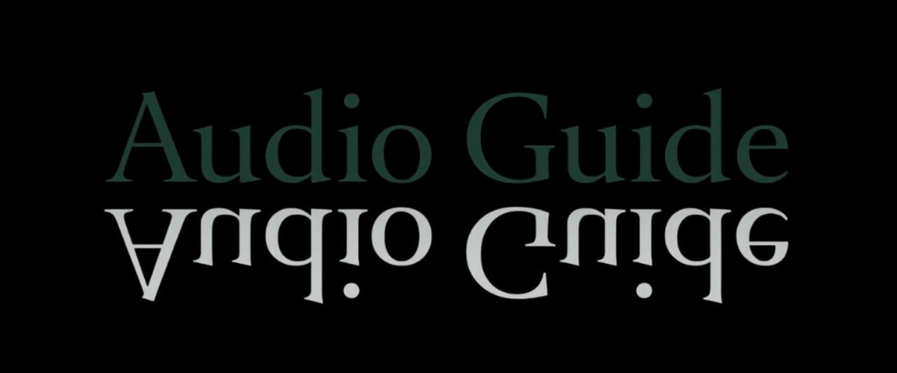

🔗 From Hardware to Voice: In the previous page, you explored the smart glasses design. Now, experience their most human feature – an AI voice guide for the visually impaired.

🎧 Voice Assistant for Visually Impaired
Using the bone-conduction speakers built into the smart glasses, the visually impaired user can hear descriptions of nature, landmarks, and cultural sites without blocking ambient sounds.

Fifa Mountains, Jazan – described through sound: terraced green slopes, cool breeze, and the call of birds.
📢 Sample audio: "أنت الآن تقف بالقرب من جبال فيفاء..."
👉 What's Next?
Audio guide helps the blind. The next page will show how the same smart glasses help the deaf community using visual sign language translation.
Or go back to Smart Glasses to review the hardware.